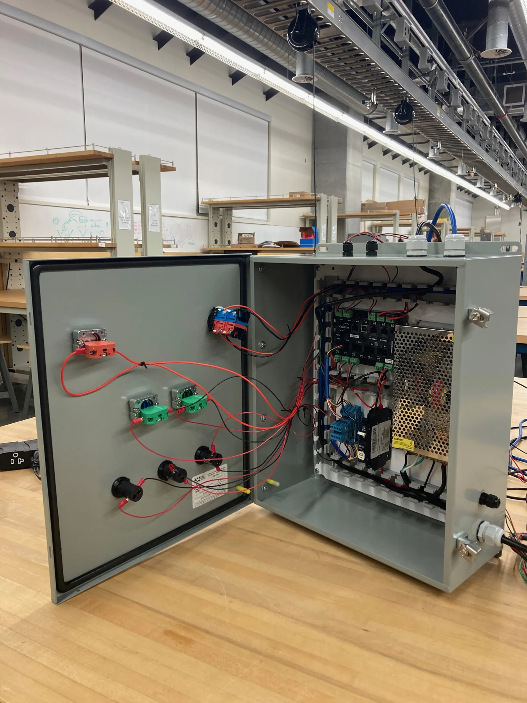
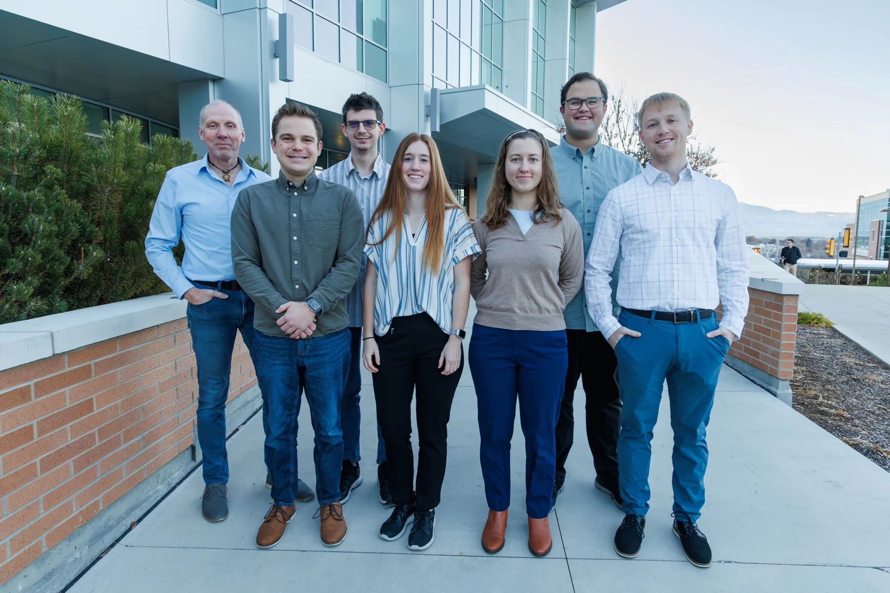

Solvay · BYU Capstone
Automated test-ball retrieval
Our capstone team designed, tested, and installed an automated retrieval system for the metal test balls used in Solvay’s sodium bicarbonate production facility. The system captures and recovers the balls used to verify metal-detector performance.

The challenge
The inspection test needed a reliable way to recover metal test balls while protecting the product stream. Our solution had to integrate with the facility’s existing equipment and quality controls.
Design and implementation
- Contributed to the design, testing, and installation of the retrieval system.
- Developed a custom control panel using a Teknic controller.
- Integrated the mechanical system and controls with the production equipment.
- Validated the system through on-site testing and iteration.


The result
The team’s installed solution reduced total test time by more than 80% and addressed the product-contamination risk associated with unrecovered test balls. The design emphasized reliable operation and straightforward use by operators.


Skills: Motion control, System integration, Testing & installation